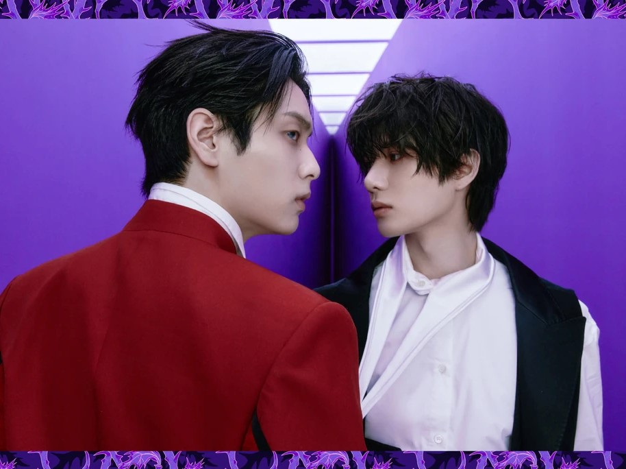

Million selling albums
TOMORROW X TOGETHER has achieved the incredible milestone of 7 consecutive million-selling albums (selling over 1 million copies in the fisrt week on Hanteo). The new album, 7TH YEAR: A MOMENT OF STILLNESS IN THE THORNS surpassed the 1 million mark on its first day and its debut week sales totaled 1,806,740 copies.